WebGLTutorials -> value
A full working set of tools, and Why did I make these tutorials
This set of WebGL tutorials is intended to get you up and programming your own 3D interactive web pages as quickly as possible.
The tutorials are mostly javascript, moderate use of html in JSP (Java Server Pages), with some tie-in to Java. They use the eclipse
development environment.
The WebGLTutorials owe much to the WebGLLessons from which they are forked. This series of tutorials is my first webGL project.
I had previously had several 3D ineractive graphics projects
using legacy OpenGL (before the introduction of shaders) programming in C++. Part of my path toward 3D interactivity was a book
by LeMothe... The black art of 3D game Programming. Therin was an attitude, some portion of which I attempt to share with you. Most
recently I joined a small team writing a web interactive database application, using java and a modest amount of javaScript.
My own style of picking up
new coding skills is to take working code and mutate it towards my own ends. This set of tutorials will hopefully be useful as the
beginning state for for your projects.
One choice I refused to make was the html server to use in doing my debugging and deployment. Some of my clients require the additional
perceived security of a local html server such as TomCat, running behind a firewall. I also see the advantages of a cloud based deployment
system such as the GAE (Google App Engine). I was able to set things up so that a single eclipse project could run under both tomcat and GAE. Well,
almost. GAE uses a datanucleus system to allow storage of information, but tomcat has no such capability. These tutorials do not use the
GAE datanucleus functionality, so the datanucleus code can be commented out. With this modification to a project both GAE and Tomcat
compile and run localy for debugging, and either can be used for deploy.
Among the difficulties faced along the way toward becoming functional with javascript, I was much frustrated by the limited debug capability.
The most frustrating behavior was that when it hits some errors, it just stops. No complaints. Nothing. Just stops.
I developed the tactic of using jquery AJAX to allow javascript to log (by passing character strings to the server). My usual
development platform is firefox, because it has firebug. I prefer Chrome for day to day usage, but without the feedback provided by firebug,
not for debugging/development.
The tools
Most example code sets have gone the route of providing their content in a minimalist fashion, such as providing their code in a single .html file.
I chose to go the other extreem, sharing an entire eclipse project package, because the upside benifits seems large compared to the downside.
The upside as I see it
- Organizes and separates the programming functionality into locations which are compartmentalized
- provides the integration of different functional blocks of code in a working set
- shows one way in which multiple web pages can be organized into an interconnected suite of pages
- allows code reuse among several tutorial pages
- in order to be able show some of the aspects of WebGL, interactivity was necessary. This in turn
was best accomplished by having jquery UI functions.
- being able to log diagnostics from within javascript needed server side code, facilitated by jquery ajax.
- My having patched these several things together seemed a good shot at folks being able to use them.
The dowside as I see it.
- potential for the install process to go horribly wrong, and for folks to be unable to get it working
Download all the packages in the table below:
The versions listed are the most recent stable released versions of the products.
I like 7Zip.exe for unpacking the zipped packages: it leaves the original zipped version, and makes a copy If the links
provided should fail, remember always that "Google is your friend".
| Core |
| Name |
Location |
What it is |
suggested flavor |
clue |
| Java |
oracle.com |
programming language |
Java SE (Standard Edition) JDK (Java Development Kit) 7 |
Java SE... Downloads... JDK Download... version for your OS & bit Length |
| Tomcat |
tomcat.apache.org |
html server |
most recent release version |
downloads... Tomcat 7... Binary Distributions... core...verserion for your OS & bit Length |
| Homepace |
Github |
Eclipse Workspace for WebGLTutorials |
latest version |
n/a |
| Eclipse |
eclipse.org |
IDE (Integrated Development Environment) |
Eclipse IDE for Java EE Developers |
yellow rectangle toward upper right, big bold Download Eclipse |
| Full Set of building blocks if you want to build your own |
| Name |
Location |
What it is |
suggested flavor |
clue |
| Java |
oracle.com |
programming language |
Java SE (Standard Edition) JDK (Java Development Kit) 7 |
Java SE... Downloads... JDK Download... version for your OS & bit Length |
| Tomcat |
tomcat.apache.org |
html server |
most recent release version |
downloads... Tomcat 7... Binary Distributions... core...verserion for your OS & bit Length |
| Eclipse |
eclipse.org |
IDE (Integrated Development Environment) |
Eclipse IDE for Java EE Developers |
yellow rectangle toward upper right, big bold Download Eclipse |
| log4J |
tomcat Log4J |
debugging logger |
latest release version |
version 1.2.17 tar.gz or .zip |
| JSTL |
JSTL.java.net
| allows use of "<c:out" in .jsp files |
javax.servlet.jsp.jstl-api-1.2.1.jar |
http://jstl.java.net/... download JSTL... JSTL API... javax.servlet.jsp.jstl-api-1.2.1.jar |
Java:
My procedure is to go in and remove all currently installed versions of java first. I and several of my friends have
gotten into disfunction from having multiple copies of multiple versions of java on our computers. Eclipse points to
a java environment, and by un-installing all the versions you no longer need you will avoid pointing to one of the downlevel
javas. On my windows systems uninstalling a program is
control panel...
programs and features...
click on publisher...
look under two publishers (IBM, and more likely oracle) for anything JAVA
click on the icon to the left of the java program name
wait for it to finish uninstalling
look to see if there are any other java's installed, if there are... click on the next one
Tomcat:
7-Zip extract file to any convenient location. I chose c:\program files which resulted in 7Zip creating c:\program files\apache-tomcat-7.0.35
Homespace:
7-Zip extract file to any convenient location. I chose c:\ which resulted in 7-Zip creating c:\homespace
eclipse:
7-Zip extract file to any convenient location. I chose c:\ which resulted in 7-Zip creating c:\eclipse
After eclipse is unzipped you'll want to execute the eclipse.exe. With this first execution, it will prompt you to select a workspace.
You should enter c:\homespace and you probably want to click the "use this as the default" checkbox.
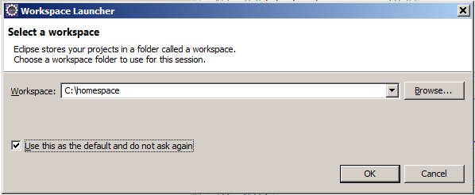
Getting a tomcat server running under eclipse
Down in the lower right corner of the eclipse app... click on the "new server wizard" link in
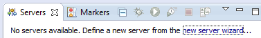
and you will get the New Server dialog with one of two outcomes: Success is if your tomct directroy is identical to the tomcat directory on the computer which created the homespace. Success looks like
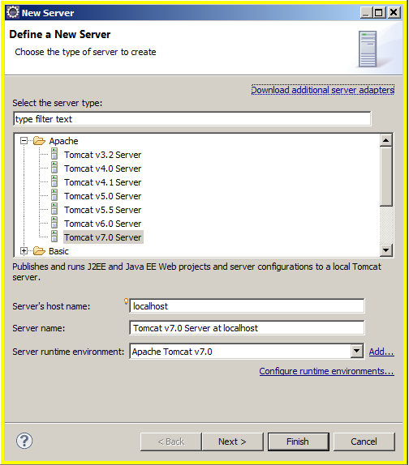
Faiure is when your tomcat directory is different from the tomcat directory on the computer which created the homespace. Failure looks like:
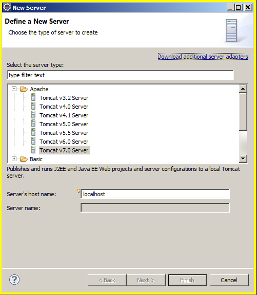
If you have success skip ahead to Add Package To Server
If instead, you have failure you need to close the New Server dialog and go to the eclipse main menu bar.
Window...
Preferences...
Server...
Runtime Environment
The Server Runtime Environment dialog will show the link to the tomcat directory on the computer which created the homespace.
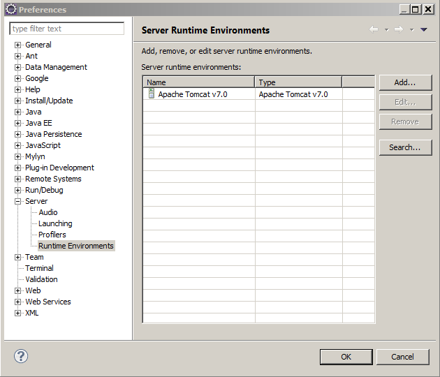
You need to highlight it.
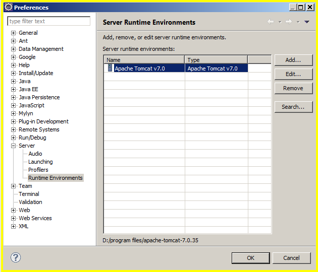
and click remove.
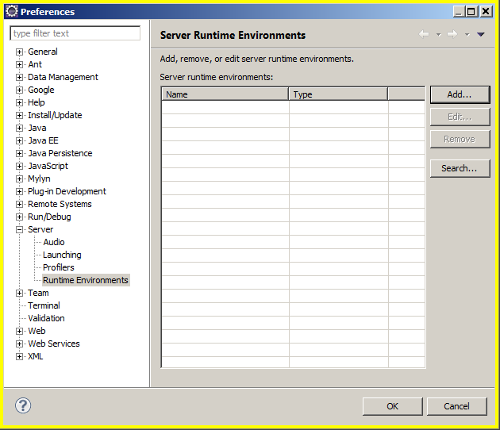
then click Add which opens the New Server Runtime Environment dialog (with the wrong choices)
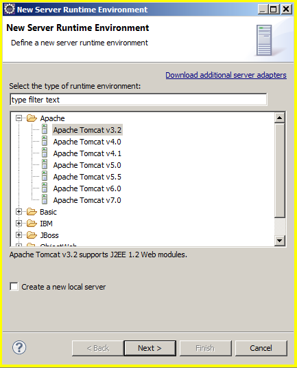
click on Apache Tomcat v7.0 and click the "Create new local server"
click FINISH to open a different dialog, which is also (somewhat irksomely) named New Server Runtime Environment
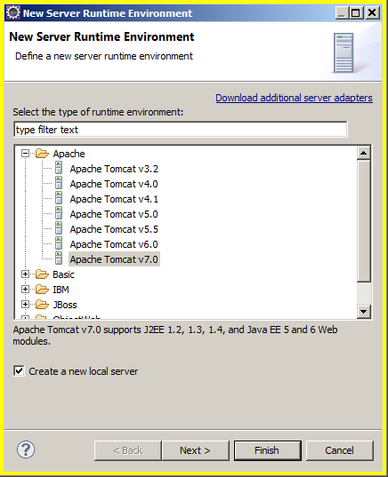
clink on the the Browse button and in the resulting "Browse for Folder" dialog and navigate to your tomcat directory. Highlight it and click ok
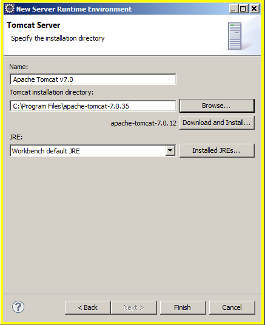
click on the installed JRE's button to open one of the many different eclipse "Preferences" dialogs.
Use the ADD button if necessary (this will not be necessary if you followed my suggestion to purge other Java JRE's and Java SDK's prior to the install of the current version SDK).
It is vital, that you have the checkbox next to the JDK clicked.
Click OK
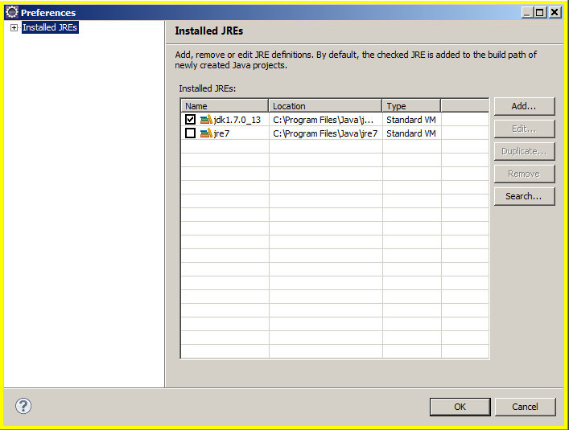
click the pulldown just to the left of the Installed JRE's button, and select the jdk
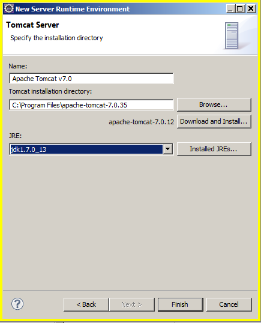
Adding WegGLTutorials to the packages served:
Go to the servers tab (probably in the lower right corner) and RIGHT mouse button click on the Tomcat v7.0 ... The dark blue highlighted line
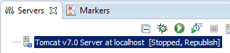
click on "add and remove""
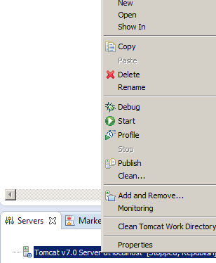
click on WebGLTurorials
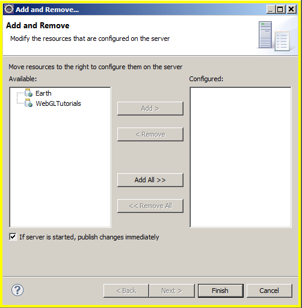
click add
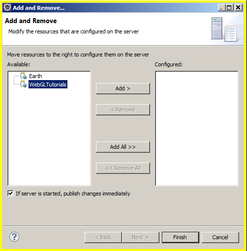
click Finished
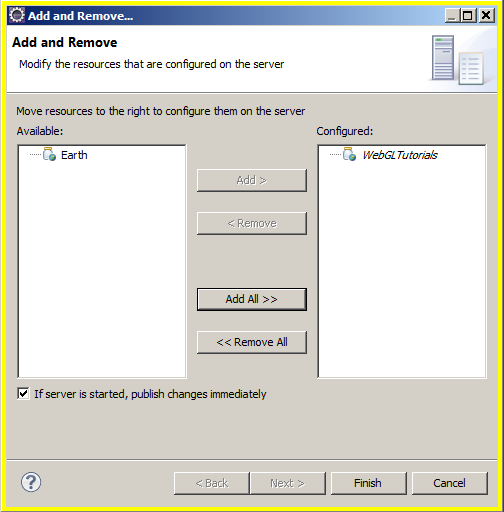
now start the server by clicking on the little green circle (in the servers tab, not the one in the eclipse main icon bar)
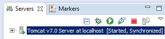
You should now have a working html server in your computer, and
http://localhost:8080/WebGLTutorials/WebGLTutorials should run a copy of these Tutorials
When you edit the various files in this tutorial, look up at the name of file in the tab at the top.
There will be an asterix to the left of the name signifying unsaved changes have been made.
Get ready to hit ctrl-S to save the file, but look down at the servers tab. The full text of the line is
Tomcatv7.0 Server at localhost: [Started,Syncronized]. When you hit the ctrl-S, the last word will change
to "republish" for a short time and will then switch back to Syncronized when the file edit changes have been compiled.
Eclipse will also remove the asterix next to the file name in the file tab.
Should you wish to force a restart of the server, with a re-compile of the project, that
server tab little green circle has become the server restart button. Halting the server is the red square. Or you can right mouse click on the
Tomcatv7.0 (the dark blue bar in the image above) and get the popup menu. If you have been doing a lot of editing, and things get wierd, among the things to try is to stop the server, get the popup menu and click on
"clean the server directory". One of my friends does this regularly.
Getting GAE (Google App Engine) running under eclipse
These instructions are based on the Google App Engine The google
instructions do not include the way to allow tomcat server compatability. When you want to deploy your project to the web, you will want to go into the google app engine documentation to
learn how to regester your project and upload it.
Help...
Install New Software...
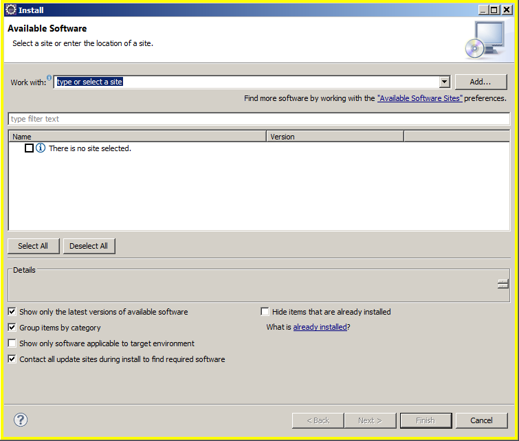
in the work with text box type https://dl.google.com/eclipse/plugin/4.2 and hit enter.
The block in the middle will show pending for some seconds, but will soon pop up with
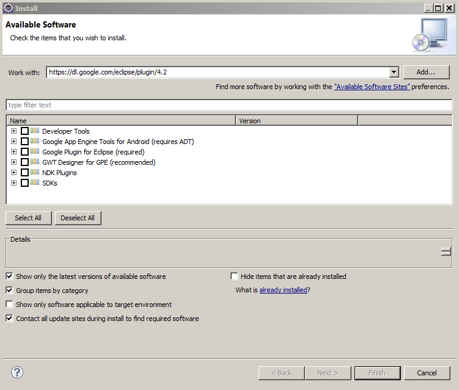
I selected a minimal set, and hit next
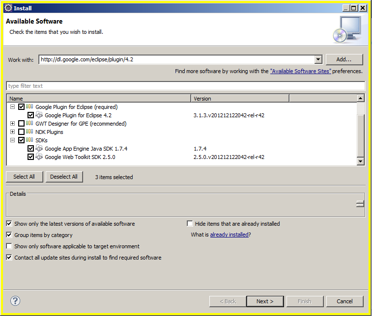
It wants to verify the install details. Hit next.
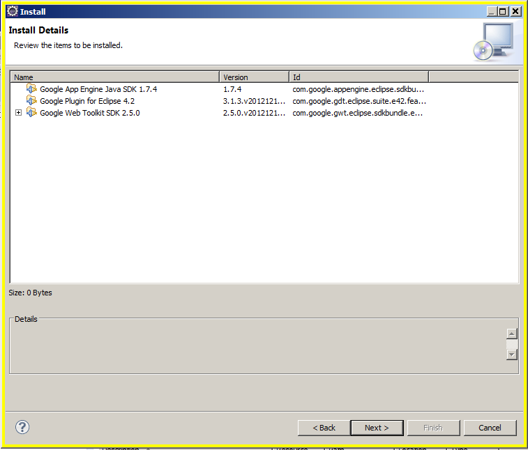
You'll need to accept the licence agreements. Hit finish.
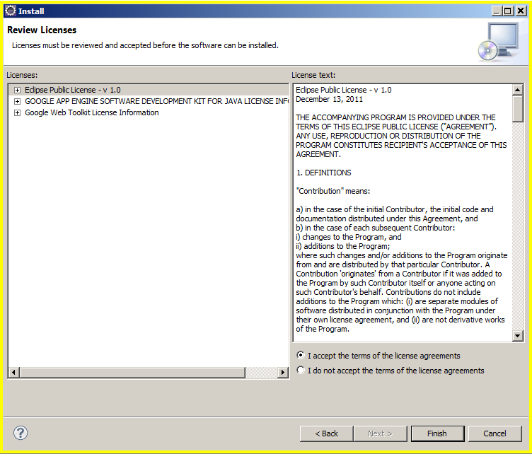
it will take a long time, on the order of a half hour or so, but don't wander off because.
about 20 min in, it comes up with this which needs to have it's ok button clicked
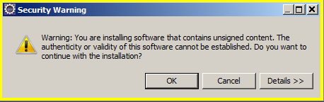
Seems like only a min later it wants permission to restart eclipse. Click the yes button
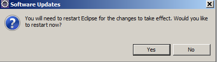
when eclipse starts back up again, you'll have the GAE icon in the eclipse icon bar
At this point, you have the GAE installed and can use it as your local server.
Go to the Project Explorer tab, and RIGHT click on the project you want to have served.
A dropdown menu drops down. hover over "Debug As" and when the next dropdown menu appears, move over and click on "Web Application"
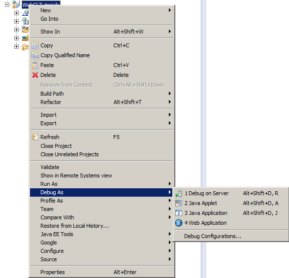
The console will get a lot of red text. This is normal. Eclipse showing red in the console does not even mean that any errors are occuring.
After a few seconds the last line shoudl be...
INFO: The admin console is running at http://localhost:8888/_ah/admin
open up your favorite web browser and enter url http://localhost:8888/WebGLTutorials
and you'll be running the tutorial web pages on your own local GAE server.
If all that worked, you are ready for Tutorial01